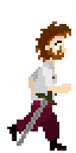
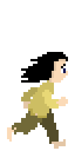
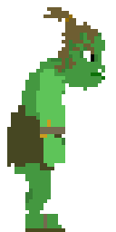

- James
- Arthur
- Gurgar
James
C'est un ancien aventurier, malgré sa renommée et ses faits d'armes.
Il fut injustement accusé de trahison. Il décida de ce laissé.
Emprisonner afin d'attendre le moment opportun pour fuir le royaume
Avec sa femme et sa fille.

Arthur
C'est un voleur, il est jeune et fut emprisonné pour avoir volé du
pain, qu'il souhaitait donner à sa jeune sœur.

Gurg'har
C'est un guerrier orc appartenant à la noblesse qui fut emprisonné
par pur racisme, le royaume est attaqué par les siens qui cherchent
a. Le libéré.
Changer de mode : darkmode/lightmode